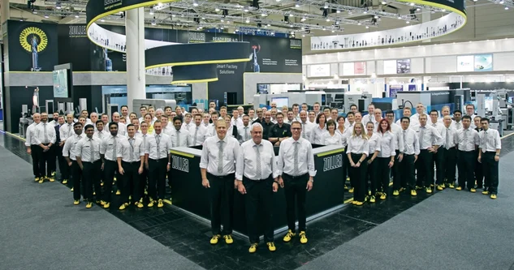
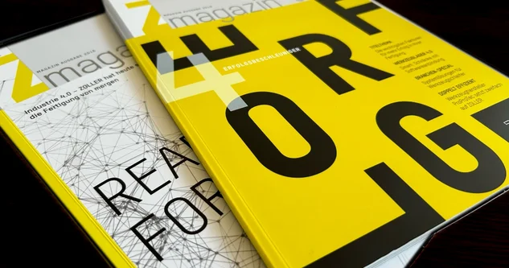
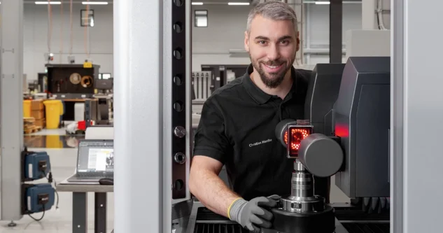

O firmie ZOLLER
Z nazwiskiem ZOLLER występuje ściśle połączenie z zespołem liczącym ponad 800 osób, wiele innowacji oraz przywiązanie do lokalnych korzeni charakterystyczne dla firmy rodzinnej.
Dowiedz się więcej

Z nazwiskiem ZOLLER występuje ściśle połączenie z zespołem liczącym ponad 800 osób, wiele innowacji oraz przywiązanie do lokalnych korzeni charakterystyczne dla firmy rodzinnej.

Tutaj znajdą Państwo komunikaty prasowe, zapowiedzi produktów, informacje o udziału w targach, artykuły prasowe z czasopism branżowych oraz
archiwum wiadomości.

Co się dzieje w firmie ZOLLER? Co mówią nasi klienci o pracy z rozwiązaniami ZOLLER? Tutaj znajdziesz najnowsze informacje.